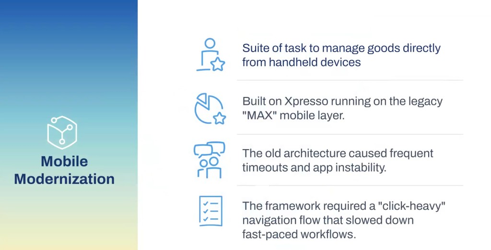

Canvas Web defaults — airy, slow.


21 tasks, same three gaps.
Action bars truncated at ~360px · list rows too airy · blue scanner panel squeezed forms. Full library overhaul — three examples next.

Cursor bridged Figma specs to production.
One of few Workday designers who ship to the repo — not just the file. Top 3 contributor on the frontend work · 9 PRs merged.
Connect the repo
Linked Cursor to the Canvas Web GitHub — design system in my workspace, same code engineering reviews.
Spec from Figma
Token values and spacing from Figma specs — prompted Cursor to apply the same Canvas tokens in component code.
Trial, then scale
Validated on the first inventory task, then rolled the pattern across every component in the modernization.
Action bar · 360px
clamp() on gap and padding between sm→xxl tokens. Labels no longer truncate. Storybook at 360px before merge.


Par Count · like-to-like density
Same structure line-for-line — headers, rows, dual actions. Only tightened padding and gaps. More lines per screen; less re-training.


Scanner panel removed · form space back.
Blue panel ate a third of the screen. Customer review pushed removal — scan state moved into the action bar. Same pattern scaled across adjust inventory and related tasks.


Batch pick — stress-test before scale.
Highest line volume, constant scanning, dual footer actions. Scanner auto-advances steps; fields auto-advance. Validated here, then rolled to the other 20 tasks — mobile web shell, no native rebuild.


More before states

